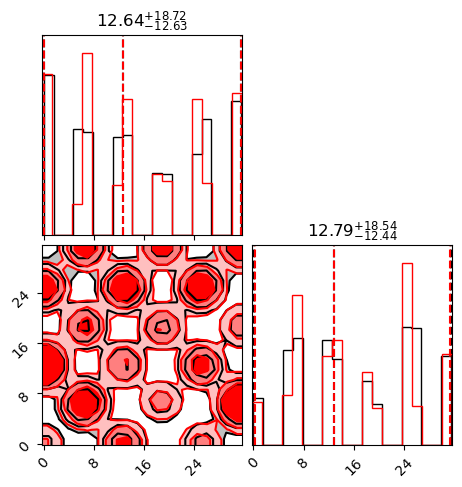

Eggbox#
import numpy as np
from dynesty import NestedSampler
from dynesty import utils as dyfunc
import matplotlib.pyplot as plt
import corner
# -------------------------------
# Eggbox definition
# -------------------------------
# Prior bounds
prior_min, prior_max = 0.0, 10.0 * np.pi
prior_volume = (prior_max - prior_min) ** 2 # for reference
# True evidence from the literature
true_logz = 235.856
def loglikelihood(theta):
"""
Eggbox log-likelihood.
theta: array of shape (2,)
"""
x, y = theta
return (2.0 + np.cos(x / 2.0) * np.cos(y / 2.0)) ** 5
def prior_transform(u):
"""
Transform from unit cube [0,1]^2 to parameter space [0, 10π]^2.
"""
x = prior_min + (prior_max - prior_min) * u[0]
y = prior_min + (prior_max - prior_min) * u[1]
return np.array([x, y])
# -------------------------------
# Run dynesty Nested Sampling
# -------------------------------
# 2 parameters
ndim = 2
# Set up the sampler
sampler = NestedSampler(
loglikelihood,
prior_transform,
ndim,
nlive=500, # number of live points; increase for accuracy
sample="rwalk", # random-walk proposals; can try "unif", "slice"
bound="multi", # bounding method ("multi" good for multimodal)
)
print("Running dynesty Nested Sampling on Eggbox...")
sampler.run_nested(print_progress=True)
res = sampler.results
samples, weights = res.samples, np.exp(res.logwt - res.logz[-1])
posterior_samples = dyfunc.resample_equal(samples, weights)
# -------------------------------
# Report results
# -------------------------------
logZ, logZerr = res.logz[-1], res.logzerr[-1]
print("\n==== RESULTS ====")
print(f"dynesty estimated logZ = {logZ:.3f} ± {logZerr:.3f}")
print(f"True logZ (literature) = {true_logz:.3f}")
print(f"Error = {logZ - true_logz:.3f}")
Running dynesty Nested Sampling on Eggbox...
0it [00:00, ?it/s]
4081it [00:03, 1236.54it/s, +500 | bound: 31 | nc: 1 | ncall: 68437 | eff(%): 6.743 | loglstar: -inf < 242.999 < inf | logz: 235.689 +/- 0.113 | dlogz: 0.001 > 0.509]
==== RESULTS ====
dynesty estimated logZ = 235.689 ± 0.210
True logZ (literature) = 235.856
Error = -0.167
import morphZ
# import logging
# from morphZ import setup_logging ; setup_logging(level=logging.INFO)
# Prior bounds
prior_min, prior_max = 0.0, 10.0 * np.pi
prior_volume = (prior_max - prior_min) ** 2 # 2-D uniform cube
def logprior(theta):
"""Uniform prior over [0, 10π]^2."""
x, y = theta
if (prior_min <= x <= prior_max) and (prior_min <= y <= prior_max):
return -np.log(prior_volume)
else:
return -np.inf
def lnprobfn(theta):
"""Log-probability combining prior and likelihood."""
return logprior(theta) + loglikelihood(theta)
samples = posterior_samples[::1,:] # total_samples[::20,:]
samples.shape
(4581, 2)
samples = posterior_samples[::2,:] # total_samples[::20,:]
tot_len , ndim = samples.shape
print('Total samples:', tot_len, 'Dimensions:', ndim)
log_prob = np.zeros(tot_len)
for i in range(tot_len):
log_prob[i] = lnprobfn(samples[i,:])
log_p_estimate = morphZ.evidence(
samples,
log_prob,
lnprobfn,
n_resamples=5000,
thin=1,n_estimations=1,morph_type="pair",kde_bw="silverman",output_path='./eggbox/')
print(f'MorphZ estimated log(Z): {log_p_estimate}')
print('True:', true_logz)
Total samples: 2291 Dimensions: 2
MorphZ estimated log(Z): [[236.22140291604856, 0.18547579741768344]]
True: 235.856
pair_kde = morphZ.PairwiseKDE(samples,'./eggbox/params_MI.json',kde_bw=0.01)
pair_samples = pair_kde.resample(2000)
fig = corner.corner(
posterior_samples[::2,:], bins=20,label_kwargs = {"fontsize": 7},truth_color="dodgerblue",hist_kwargs={"density": True},quantiles=[0.05, 0.5, 0.95],
show_titles=True,
fontzise=6,
title_fmt=".2f",
plot_datapoints=False,
fill_contours=True,
levels=(0.5, 0.8, 0.95),
smooth=1.0
)
corner.corner(
pair_samples,color="red", bins=20,label_kwargs = {"fontsize": 7},truth_color="dodgerblue",hist_kwargs={"density": True},quantiles=[0.05, 0.5, 0.95],
show_titles=True,
fig=fig,
fontzise=6,
title_fmt=".2f",
plot_datapoints=False,
fill_contours=True,
levels=(0.5, 0.8, 0.95),
smooth=1.0
)
plt.show()
